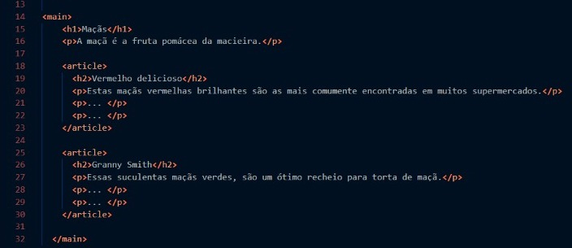
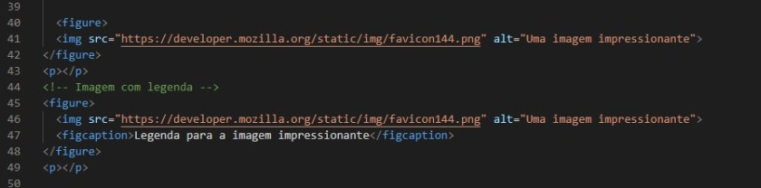
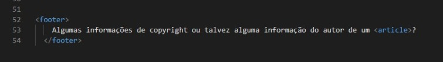
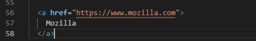

O elemento <main> define o conteúdo principal dentro do <body> em seu documento
ou aplicação. Entende-se como conteúdo principal aquele relacionado diretamente com o tópico central
da página ou com a funcionalidade central da aplicação. O mesmo deverá ser único na página, ou seja,
dentro do elemento <main> não deverão ser incluidas seções da página que sejam comuns a todo o site ou
aplicação, tais como mecanismos de navegação, informações de copyright, logotipo e campos de busca
(a não ser, é claro, caso a função principal do documento seja fazer algum tipo de busca).
Exemplo de uso <main>:

Notas: O elemento <main> não pode ser filho dos elementos <article>, <aside>,
<footer>, <header>, ou <nav>. Autores não devem incluir mais de um elemento main no mesmo documento.
Figure
O Elemento <figure> representa o conteúdo independente, frequentemente com uma legenda (<figcaption>),
e é normalmente referido como uma única unidade. Enquanto ela está relacionada com o fluxo principal,
sua posição é independente do fluxo principal.Normalmente, isso é uma imagem, uma ilustração, um diagrama,
um trecho de código ou uma esquema que é referenciado no texto principal, mas que pode ser movido para
outra página ou para um apêndice, sem afetar o fluxo principal.
Exemplo de uso <figure>:

Notas: Uma legenda pode ser associada com o elemento <figure>
inserindo o elemento <figcaption> dentro dele (no inicio ou no fim).
Footer
O elemento <footer> representa um rodapé para o seu sectioning content (conteúdo de seção)
mais próximo ou sectioning root elemento (ou seja, seu parente mais próximo <article>, <aside>, <nav>, <section>,
<blockquote>, <body>, <details>, <fieldset>, <figure>, <td> (en-US)). Normalmente um rodapé contém informações
sobre o autor da seção de dados, direitos autorais ou links para documentos relacionados.
Exemplo de uso <footer>:

Notas: O elemento <footer> não é sectioning content
portanto, não introduz uma nova seção no outline.
a
O Elemento <a>, o atributo hrefcria-se uma hiperligação
nas páginas web, arquivos, endereços de ligações, na mesma página ou endereços na URL.
O conteúdo de cada <a> indicação indica o destino do link.
Exemplo de uso <a>:

Notas: Download funciona somente para URLs de mesma origem , ou os esquemas blob:e data: